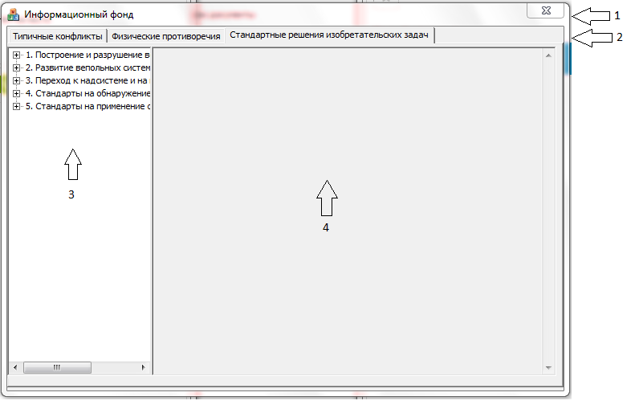

Описание внешнего вида

Список рабочих областей и описания их краткого назначения:
1.Заголовок окна – содержит название и управляющую кнопку Закрыть, благодаря которой можно выйти из Информационного Фонда.
2.Область вкладок – отображает вкладки «Типичные конфликты», «Физические противоречия» и «Стандартные решения изобретательских задач»
3. Область выбора – предоставляет пользователю выбор:
3.1. Позволяет выбрать из списка один из типичных конфликтов.
3.2. Позволяет выбрать из списка одну из существующих стандартных решений изобретательских задач .
4.Область отображения – отображает один из выбранных пунктов из области решения.
Примечание: Вкладка физические противоречия содержит только область отображения.